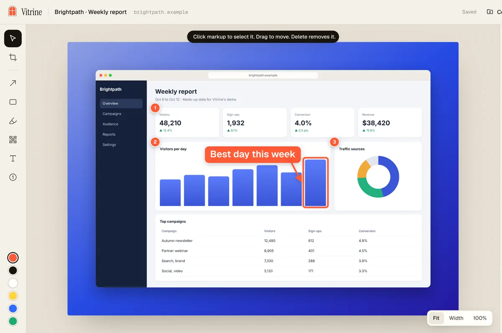
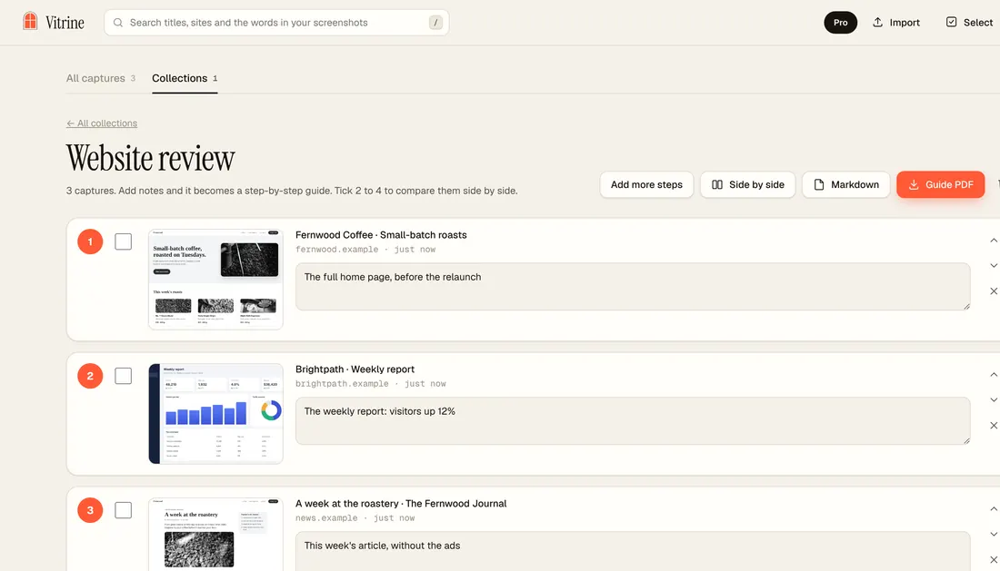

Full page screenshot to PDF in Chrome
Checked November 4, 2026. Written for Vitrine 1.2.2.
“Full page screenshot to PDF” can mean two different things. Some people want a document: real text they can select and search. Others want a picture of the page as they see it, saved as a PDF. Chrome can do the first one by itself. For the second, you need a screenshot. Here are the ways, and what each one gives you.
Way 1: Print to PDF (a document)
- Open the page.
- Press Ctrl + P (Windows) or Cmd + P (Mac).
- Set Destination to Save as PDF.
- Open More settings. Pick a paper size, set the margins to None or Minimum, and tick Background graphics so colours and images are kept.
- Click Save.
You get a paginated PDF with real text. That is its strength: you can select, search and copy from it. The cost: the page is cut into sheets, and many sites switch to a different layout when printed, so it can look unlike what you saw on screen. Menus and banners may be missing, or in the way. If the right edge is cut off, lower the scale in More settings.
Way 2: Take a screenshot, then make it a PDF
- Capture the whole page as one image. In Chrome, open DevTools (F12 on Windows, Cmd + Option + I on Mac), press Ctrl + Shift + P (Cmd + Shift + P on Mac) and choose Capture full size screenshot. See how to take a full page screenshot in Chrome.
- You get a PNG in Downloads. Convert it with any image-to-PDF tool or your computer’s print dialog.
You keep the exact look of the page. The cost is two steps, and the same limits as any plain capture: banners, pop-ups and ads are in the picture, and a very tall image can turn into one oversized PDF page.
Way 3: Vitrine, a screenshot straight to PDF
Vitrine is a free Chrome extension. Capture and PDF are one flow.
- Add Vitrine from the Chrome Web Store and pin it.
- Open the page. Press Alt + Shift + S (Windows) or Option + Shift + S (Mac). Vitrine scrolls the whole page, loads lazy images, and hides cookie banners, chat bubbles, pop-ups and ads for the shot.
- The Studio opens. Frame it, add arrows or blur if you want.
- Next to the Download button, choose PDF (the other choices are PNG and JPG).
- Click Download. The PDF goes to your Downloads folder.

What the PDF looks like
- It is a picture of the page, as you saw it, not a text document. Text in it cannot be selected, and links are not clickable.
- A capture much taller than it is wide is split into A4-shaped pages, so it prints well. A shorter one stays on one page.
- Pages too tall for one sharp image are also kept as sharp pages. You can save them as a ZIP, or as a PDF (“Sharp PDF”).
- It stays on your computer. No upload, no account.

If you want a how-to, Vitrine can also record a step-by-step guide: each capture becomes a numbered step with a note, and you export a PDF or Markdown. Free guides carry a small “Made with Vitrine” line, and Pro removes it.
Which way should you use?
- An article or receipt you want to search and quote: Print to PDF.
- A page that must look exactly like the screen, such as a design review, a client proof or a record of what a page said: a screenshot saved as PDF.
- Both, or often: do Way 1 for the text and Way 3 for the look.
The Vitrine proof stamp, a Pro feature, adds the source link and the capture date under the image, which helps when the PDF is a record.
What it costs
Capture, copy and export to PNG, JPG and PDF are free, for good. Pro is $24 once, with no subscription. The launch price is $19 until November 30, 2026. See the price comparison and the Vitrine home page.